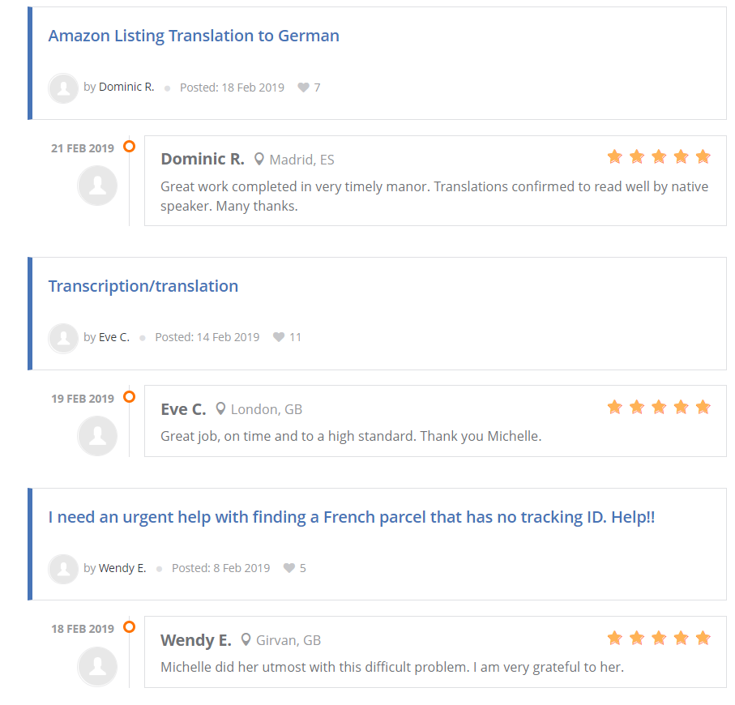
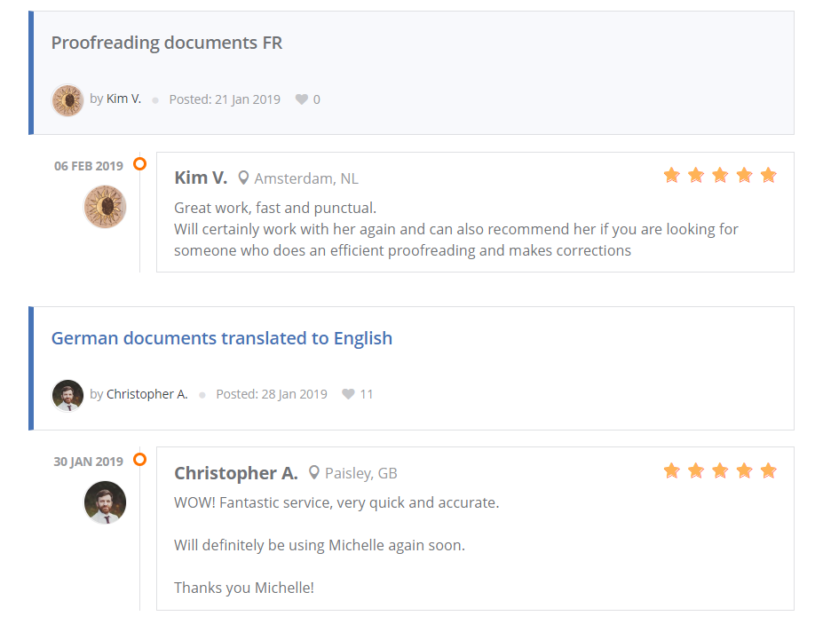
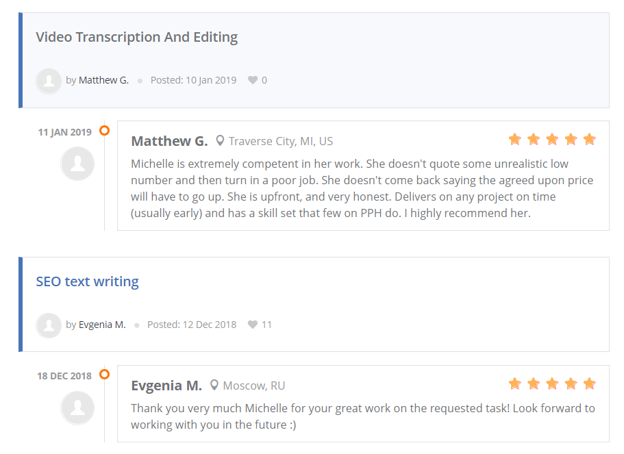
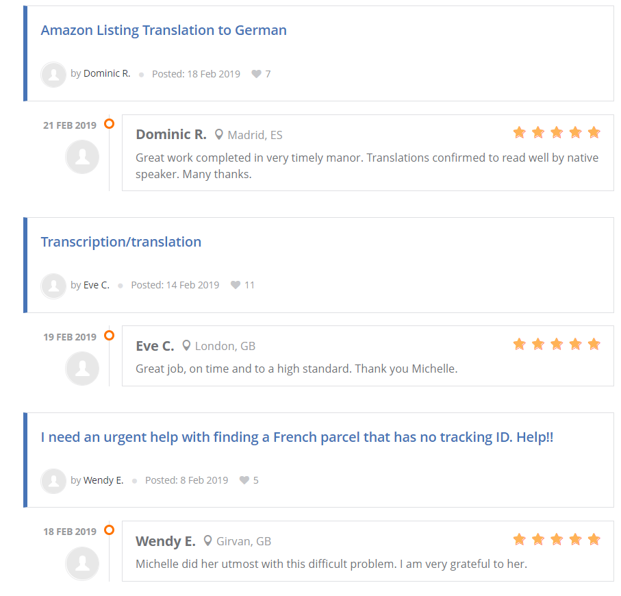
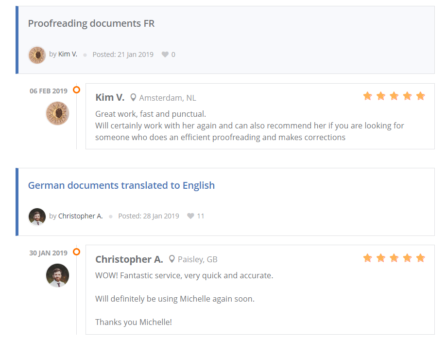
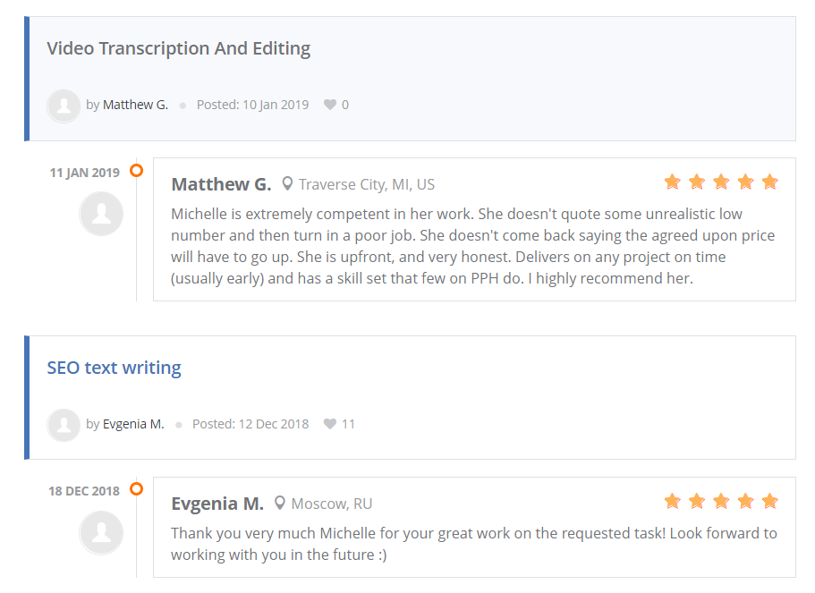

☰ Menu
Services
Translation
In today's world of online global business, it is important to reach as many people as possible. By making sure your website is translated in as many languages as possible, you can boost your business.
As a native Dutch speaker and certified translator in Dutch, German, French and English I can help you with that.
I grew up speaking both Dutch and French. I have a high school degree in Latin and modern languages and a bachelor's degree in applied language studies German and English. I also scored 111 on my TOEFL test which states I have a native speaker level of English.
I have worked for customers such as Hunkemoller Belgium and Asics.com
Price reference: I usually charge 4 cents per word for translation project, but negotiation is possible for bigger projects.
Transcription and subtitling
A lot of videos today are being watched with subtitles and without sound.
If you want people to watch your videos under any circumstances, I can help you providing transcriptions and subtitles.
I have been working with Amberscript for about a year and have worked for clients such as the Dutch national TV, Njam TV Belgium and KLM.
Price reference: Transcription rates start at 1 euro per minute and subtitling at 1.75 euro per minute.
Copy writing
A true piece of writing is a dangerous thing, it can change your life.
That is a motto I like to live by and something I like to keep in mind when writing anything.
If you want to make sure your website or other content is written by a professional, I can use my language and marketing skills to help you accomplish whatever your goal is.
Price reference: Content writing rates start at 20 euros per page.
Proofreading
The surest way to find spelling and grammar mistakes is to hit send.
If you have been through this, make sure to avoid this in the problem by having your text proofread by a professional linguist.
Price reference: Proofreading prices start at 2 cents per word.
Marketing
I have a master's degree in Multilingual Professional Communication.
Classes like marketing management or marketing communication in combination with my language skills allow me to create your perfect marketing content.
From marketing plans to email marketing to PR, I can cover it for you.
Prices depend on the project, please get in touch through the Contact Me page.
Website development
If people can't find you online, they assume you don't exist as visability is profitability.
If you have a business, event or anything else that you want people to hear of, it is important to start a website.
I am certified in HTML 5 and can copy write your website content, create your website and deliver it in several languages.
Prices depend on the project, please get in touch through the Contact Me page.
Database management
If you have a business, you have data to deal with.
And without someone who knows how to manage your database, this can become chaotic and messy very fast.
With a certification in SQL, I can help you manage all of your databased.
Prices depend on the project, please get in touch through the Contact Me page.
Customer Reviews
 




